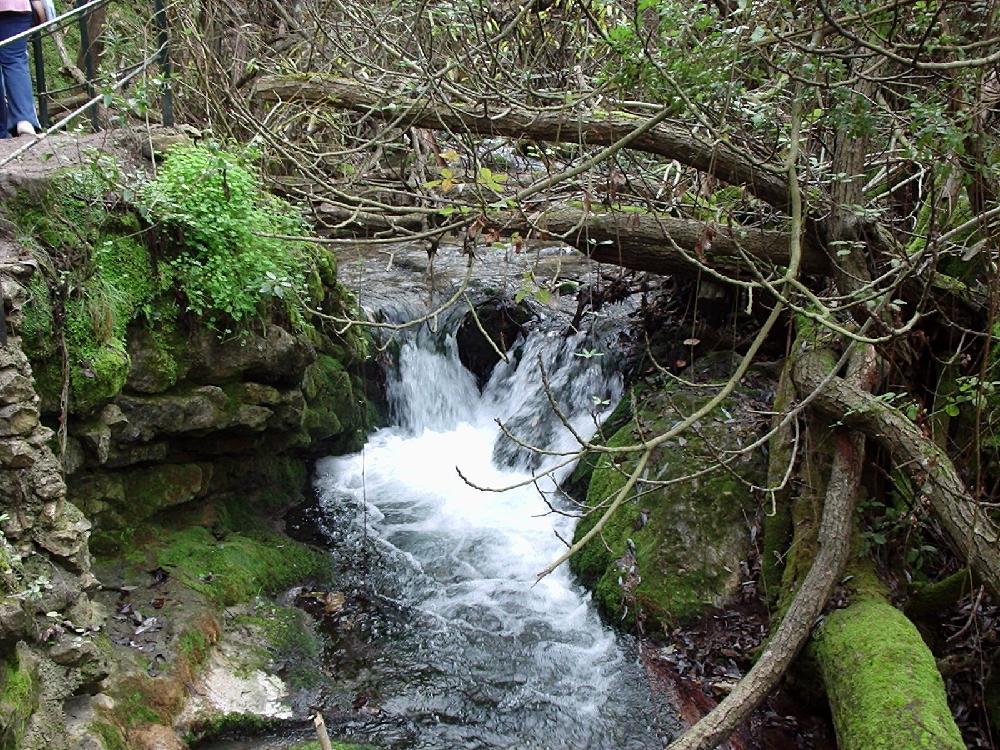

LAS BUGANVILLAS
La vida, a otro ritmo.
UN PARÉNTESIS EN EL BOSQUE01 / LA CASA
LAS BUGANVILLAS, EL BOSQUEEl gusto de
estar a gusto.
Una casa rural en El Bosque para compartir los días y hacer una pausa en la Sierra de Grazalema.
Las Buganvillas reúne espacios interiores para estar juntos y zonas al aire libre con piscina y terraza. Un lugar desde el que preparar una escapada a la sierra gaditana, con tiempo para lo que más te apetezca.
Ver fotografías reales en ACARUCA Las imágenes de la propiedad se pueden consultar en su ficha de alojamiento.LA CASA,
DE UN VISTAZO.
- Huéspedes
- 8
- Dormitorios
- 2
- Baño
- 1
Para organizar tu estancia,
empieza por lo esencial.
02 / DENTRO & FUERA
Cada día,
su espacio.
De la sobremesa al aire libre.
De un baño a una tarde sin planes.
I.Al aire libre
Piscina, terraza y barbacoa para disfrutar también del exterior.
PISCINA · TERRAZA · BARBACOAII.La vida en casa
Cocina con menaje, microondas y tostadora. La casa cuenta también con chimenea, televisión y lavadora.
COCINA · CHIMENEA · LAVADORAIII.Antes de venir
La ficha de ACARUCA indica aparcamiento y admisión de animales. Consúltanos las condiciones para tu mascota y cualquier necesidad particular antes de organizar el viaje.
APARCAMIENTO · MASCOTAS, CONSULTAR CONDICIONESCaracterísticas publicadas en ACARUCA. Confirma condiciones y uso de la piscina para tus fechas.
03 / EL ENTORNO
UNA DIRECCIÓN EN CÁDIZ.
OTRA MANERA DE MIRAR.
Sierra de
Grazalema.


El paisaje
marca la pausa.
El Bosque forma parte de los municipios del Parque Natural Sierra de Grazalema. Un territorio de relieves calizos entre las provincias de Cádiz y Málaga.
El río Majaceite y los pueblos de la sierra son parte de este contexto natural. Para preparar tus paseos, consulta las indicaciones y el estado de los senderos en la información oficial del parque.
Descubrir el parque natural04 / EL PUNTO DE ENCUENTRO
EL BOSQUE · 11670 · CÁDIZNos vemos
en El Bosque.
Diseminado de las Cuevas, 15011670 El Bosque, CádizCómo llegar
Abre la dirección en Google Maps.
Escríbenos si necesitas indicaciones de llegada.
Las BuganvillasEL BOSQUE
UN LUGAR AL QUE LLEGAR.
UN TIEMPO PARA QUEDARSE.
05 / EMPEZAMOS CON UN HOLA
¿Y si nos
escapamos?
Cuéntanos cuándo te gustaría venir y cuántos sois.
Te informaremos sobre disponibilidad y condiciones.
Las Buganvillas